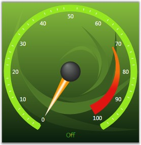
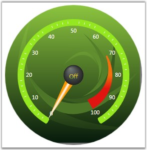

The default Circular gauge template can be overwritten to provide custom visual style. For instance, create control template with single border as root element and bind the required properties with the template binding logic to supply values through setter method in style.
|
[XAML]
<Window.Resources> <ResourceDictionary> <!--Control template for circular gauge.--> <ControlTemplate x:Key="customTemplate" TargetType="{x:Type syncfusion:CircularGauge}"> <AdornerDecorator> <!--Border, property values with template binding.--> <Border Name="PART_ContainerBorder" Width="{TemplateBinding Width}" Height="{TemplateBinding Height}" Background="{TemplateBinding Background}"/> </AdornerDecorator> </ControlTemplate> |
 Note: While adding custom templates, the
<ControlTemplate> tag should be followed by the <AdornerDecorator>
tag, and the <Border> tag of name "PART_ContainerBorder", for proper
rendering of elements.
Note: While adding custom templates, the
<ControlTemplate> tag should be followed by the <AdornerDecorator>
tag, and the <Border> tag of name "PART_ContainerBorder", for proper
rendering of elements.
Apply template for gauge using style property or through application level scope.
|
[XAML]
<!--Style for gauge.--> <Style TargetType="{x:Type syncfusion:CircularGauge}"> <!--Applying custom template.--> <Setter Property="Template" Value="{StaticResource customTemplate}"/> <!--Width and Height of the gauge.--> <Setter Property="Width" Value="300" /> <Setter Property="Height" Value="300" /> <!--Background for border. Value can be any brush type.--> <Setter Property="Background" Value="{StaticResource gaugeBackground}"/> </Style> </ResourceDictionary> </Window.Resources> <Grid> <!--Hosting Circular Gauge in Grid.--> <syncfusion:CircularGauge Margin="5" Name="circularGauge1"/> </Grid> |
Note: Resource gaugeBackground is a custom Visual
Brush which is declared in App.xaml.
Press F5 to run the application; you should see circular
gauge with custom template like the following image.

Figure 17: Custom Template
It is possible to convert the gauge from rectangle shape to circular shape using CornerRadius property. Create object for RadiusConverter class in ResourceDictionary and bind the Radius to the corner radius of the border. Here is the complete re-written template for gauge.
|
[XAML]
<Window.Resources> <ResourceDictionary> <syncfusion:RadiusConverter x:Key="RadiusConverter"/> <!--Control template for circular gauge.--> <ControlTemplate x:Key="customTemplate" TargetType="{x:Type syncfusion:CircularGauge}"> <!--Border, property values with template binding.--> <Border Width="{TemplateBinding Width}" CornerRadius="{Binding Path=Radius, RelativeSource={RelativeSource AncestorType={x:Type syncfusion:CircularGauge}}, Converter={StaticResource RadiusConverter}}" Height="{TemplateBinding Height}" Background="{TemplateBinding Background}"/> </ControlTemplate> <!--Style for gauge.--> <Style TargetType="{x:Type syncfusion:CircularGauge}"> <!--Applying custom template.--> <Setter Property="Template" Value="{StaticResource customTemplate}"/> <!--Width and Height of the gauge.--> <Setter Property="Width" Value="{Binding Path=Radius, RelativeSource={RelativeSource AncestorType={x:Type syncfusion:CircularGauge}}, Converter={StaticResource RadiusConverter}}"/> <Setter Property="Height" Value="{Binding Path=Radius, RelativeSource={RelativeSource AncestorType={x:Type syncfusion:CircularGauge}}, Converter={StaticResource RadiusConverter}}"/> <!--Background for border. Value can be any brush type.--> <Setter Property="Background" Value="{StaticResource guageBackground}"/> </Style> </ResourceDictionary> </Window.Resources> <Grid> <!--Hosting Circular gauge.--> <syncfusion:CircularGauge Margin="5" Name="circularGauge1"> </Grid> </Window.Resources> |
Press F5 to run the application; you should see circular gauge with custom template like the following image.

Figure 18: Circular Gauge with complete Custom Template